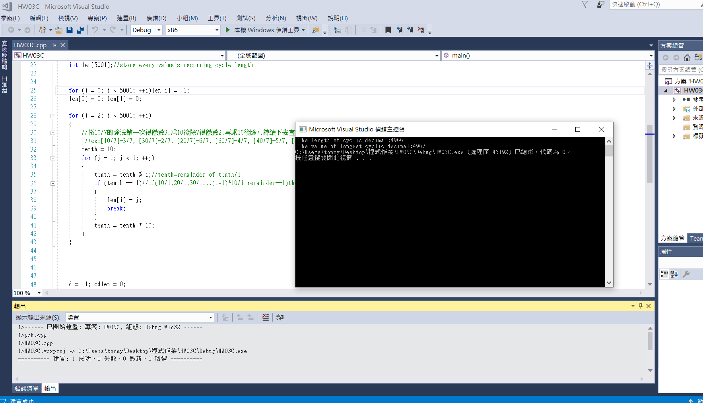

Use of selection structure and repetition structure
A unit fraction contains 1 in the numerator. The decimal representation of the unit fractions with denominators 2 to 10 are given:
| 1/2= |
0.5 |
| 1/3= |
0.(3) |
| 1/4= |
0.25 |
| 1/5= |
0.2 |
| 1/6= |
0.1(6) |
| 1/7= |
0.(142857) |
| 1/8= |
0.125 |
| 1/9= |
0.(1) |
| 1/10= |
0.1 |
Where 0.1(6) means 0.166666..., and has a 1-digit recurring cycle. It can be seen that 1/7 has a 6-digit recurring cycle. Find the value of d less than 5000 for which 1/d contains the longest recurring cycle in its decimal fraction part.
result:
